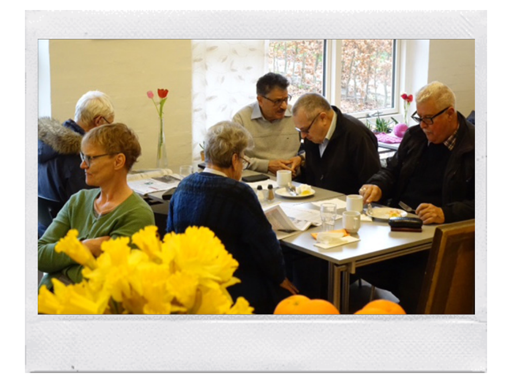

Café Parasollen er stedet hvor:
• Man går ind for at købe en kop kaffe, hjemmebagt kage, smørrebrød eller dagens varme ret m.m.
• Du går ind for at få en snak om livet.
• Du går ind for at møde og være sammen med andre mennesker.
• Du går ind, for at sidde i ro, læse dagens avis eller få et glas vand.
• Der er alkohol/stoffrit, og hvor alle er velkommen.
• Det både er "kirkens dagligstue" og "mors køkken".

Vores overordnede værdier er at på den danske folkekirkes grund at yde en diakonal og social indsats og bidrage til at skabe værdige kår for mennesker i udsatte livssituationer.
Sociale væresteder er meget andet end blot et sted at være social. I årsrapporten fra Café Parasollen i Viby kan du læse, hvordan cafeen giver mennesker på kanten af arbejdsmarkedet nye muligheder. Hvordan mennesker, der af forskellige grunde står udenfor samfundets store fællesskaber, bruger cafeen som et fristed og pusterum.